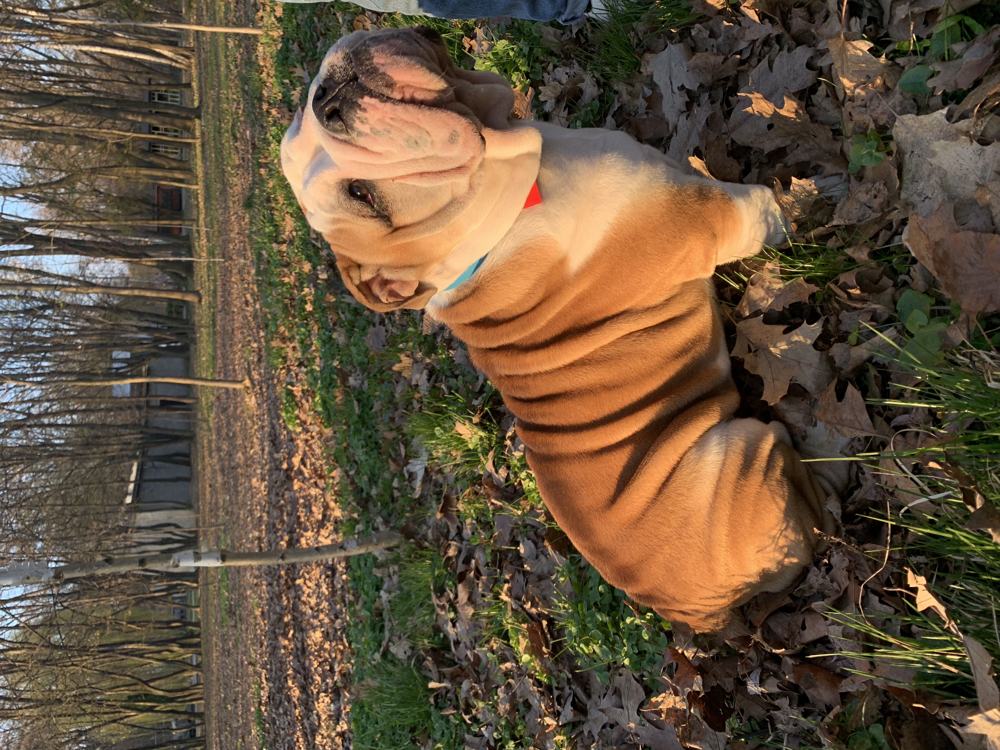

Коротка інформація
- Англійський бульдог Боня
- Країна походження: Велика Британія
- Вага: 37 кг
- Зріст: 40 см
- Вік: 5 років
Історія породи англійський бульдог
У XVII-XIX століттях біля Великобританії були поширені старі англійські бульдоги, що походять від центральноазіатських мастифів і північнокавказьких аланів. Вони мали попит як травильні собаки на полюванні. Назва повністю відповідала призначенню: слово «бульдог» перекладається з англійської як «бичачий собака». Саме старі англійські бульдоги є предками героїв нашої статті - сучасних англійських бульдогів.
Між старим англійським та сучасним англійським бульдогом є значні подібності у зовнішності. А ось головною відмінністю все ж таки є характер. Батьки нинішніх бульдогів були дуже злими. Їх використовували для розваги натовпу, стравлювали на биків, коней і навіть ведмедів та левів. Такі криваві сутички призводили до загибелі не лише диких тварин, а й самих бульдогів, які ставали жертвами ікол, рогів та копит. Кінець таким, з дозволу сказати, розвагам прийшов 1835 року, коли британський уряд повністю заборонив бої з биками. Тільки це не зупинило любителів кривавого «спорту»: якщо стало не можна стравлювати староанглійських бульдогів із биками, то замість останніх вони почали використовувати інших собак.
Через короткий час були заборонені й собачі бої. Але така гуманність зіграла зі старими англійськими бульдогами злий жарт. Позбувшись можливості брати участь у битвах - чи то з дикими тваринами, чи з іншими собаками - порода почала деградувати, тому що її надзвичайно потужні, міцні щелепи з мертвою хваткою не знаходили собі застосування. Ще одним ударом для породи стало і її фактичне вимирання, оскільки бульдогів в'язали з представниками інших порід, і чистокровних собак, зрештою, залишилося дуже мало.
У 1858-1859 роках розпочалася робота зі збереження англійських бульдогів. Проте селекціонери поставили собі й інше завдання - викоренити у них зайву злість. Не без зусиль по всій Британії відібрали найбільш врівноважених особин. Вже за рік у Бірмінгемі відбулася виставка, де були представлені зразки «нової» породи. За характером та внутрішнім світом це були вже далеко не ті бульдоги, які були відомі раніше. Відвідувачі виставки змогли оцінити роботу генетиків та селекціонерів сповна: відгуки були найпозитивнішими!
У 1873 році породу було офіційно визнано Англійським кінологічним клубом, свідченням чого став запис у племінних книгах того часу. На початку 1880-х років на англійських бульдогів все частіше стали звертати увагу і за межами їхньої історичної батьківщини. І сьогодні вже ніхто не скаже, за що саме їх полюбили: за кумедну зовнішність чи врівноважений характер - швидше за все і за те, і за інше.
Основні характеристики
- Темперамент: Спокійний, дещо флегматичний, доброзичливий і впертий. Бульдоги дуже прив'язані до сім’ї та люблять дітей.
- Темперамент: Спокійний, дещо флегматичний, доброзичливий і впертий. Бульдоги дуже прив'язані до сім’ї та люблять дітей.
- Спосіб життя: Це ідеальна собака для квартири. Вони не потребують великих фізичних навантажень і довгих прогулянок.
Догляд та здоров'я
- Складки на морді: Потребують регулярного очищення вологою тканиною, щоб уникнути інфекцій.
- Температурний режим: Порода чутлива до перегріву (через особливості дихання) та холоду.
- Харчування: Схильні до ожиріння, тому важливо контролювати раціон і не перегодовувати.
- Активність: Через важку статуру та коротку морду бульдоги можуть мати проблеми з диханням та суглобами.
Ця порода підійде людям, які цінують спокійний темп життя та шукають вірного компаньйона, який не вимагає інтенсивних тренувань.
Повернутися до інформації